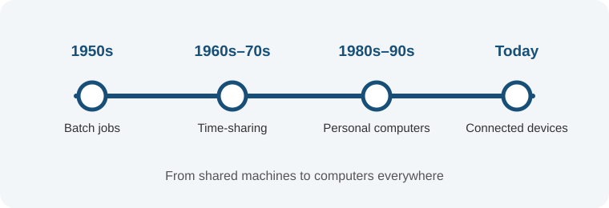

A Brief History of Operating Systems

Operating systems have changed as computers have evolved. Their development moved from batch processing to interactive machines, personal devices, and connected services.
1950s: Batch processing
Early computers processed groups of jobs in sequence. Operators prepared work for the machine, and direct interactive use was limited.
1960s–1970s: Sharing computing time
Time-sharing systems let multiple people interact with a computer through terminals. Unix also introduced ideas that influenced many later operating systems.
1980s–1990s: Personal computers
Personal computers became more common. Graphical interfaces made it easier to work with files, windows, and applications visually.
2000s to today: Connected devices
Smartphones, cloud services, and embedded computers brought operating systems into everyday devices and made network access a central part of computing.
A continuing role
As hardware changed, the operating system kept its central role: coordinating computer resources and giving people and programs a useful way to work with the machine.
Book source
For further reading: Operating Systems: Three Easy Pieces by Remzi H. Arpaci-Dusseau and Andrea C. Arpaci-Dusseau.